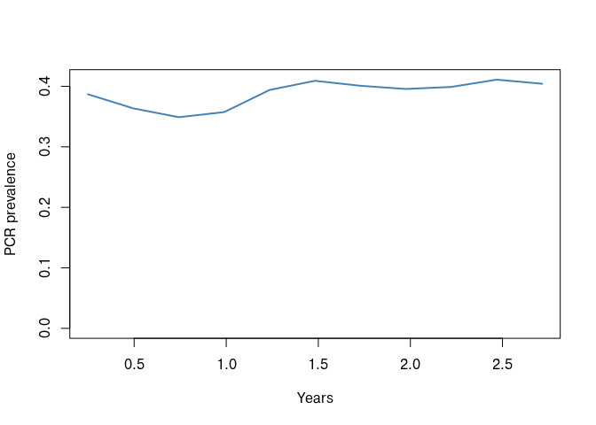

vignettes/Loggers.Rmd
Loggers.RmdA magenta simulation holds its entire state in C++
memory. What comes back into R is whatever you ask
pipeline() to extract, and the choice matters: a full
population dump at monthly intervals over 40 years is large enough to be
awkward, while the default summary may not contain what you need.
This vignette describes what each saving option returns, what the individual loggers mean, and how to save a simulation to disk and restart it later.
With no saving options, pipeline() runs to the end and
returns a single list containing Loggers, a snapshot of the
population at the final time step.
out <- pipeline(EIR = 5, N = 1000, years = 3, ft = 0.4, seed = 1L)
## Seed set to 1
## magenta v1.3.7
names(out$Loggers)
## [1] "Log_Counter" "Incidence"
## [3] "Incidence_05" "Treatments"
## [5] "daily_mutations_per_loci" "InfectionStates"
## [7] "Ages" "IB"
## [9] "ICA" "ICM"
## [11] "ID" "Mosquitoes"
## [13] "Time" "S"
## [15] "D" "A"
## [17] "U" "T"
## [19] "P"The entries fall into four groups.
Population state. S, D,
A, U, T and P are
the proportion of people in each infection state: susceptible, clinical
disease, asymptomatic, subpatent, treated and prophylactic.
as.data.frame(out$Loggers[c("S", "D", "A", "U", "T", "P")])
## S D A U T P
## 1 0.6158804 0.003590868 0.2853543 0.0826347 0.002294064 0.01024566Per individual vectors. Ages (in days),
InfectionStates coded 0:5 in the order above,
and the four immunity functions: IB (pre-erythrocytic),
ICA (acquired clinical), ICM (maternal
clinical) and ID (detection). ID is the one
used to decide whether an infection would be detected by microscopy, and
is needed by convert_barcode_vectors().
sapply(out$Loggers[c("Ages", "InfectionStates", "IB", "ICA", "ICM", "ID")], length)
## Ages InfectionStates IB ICA ICM
## 1000 1000 1000 1000 1000
## ID
## 1000Counters. Incidence and
Incidence_05 are clinical cases over the logging window,
all ages and under fives respectively. Log_Counter is the
number of days that window covered, which is what you divide by to turn
counts into rates. daily_mutations_per_loci counts
mutations at each barcode locus.
Sub-lists. Treatments records treatment
outcomes and biting:
str(out$Loggers$Treatments)
## List of 5
## $ Successful_Treatments : num 448
## $ Unsuccesful_Treatments_LPF : num 0
## $ Not_Treated : num 690
## $ daily_bite_counters : int 972234
## $ daily_infectious_bite_counters: int 10231Successful_Treatments and
Unsuccesful_Treatments_LPF are counts of treatments that
cured and that ended in a 28 day late parasitological failure. With more
than one drug deployed these become vectors, one entry per drug.
Not_Treated counts clinical cases that did not receive
treatment. daily_bite_counters and
daily_infectious_bite_counters accumulate bites over the
logging window, and dividing the latter by Log_Counter and
the population size gives the EIR.
Mosquitoes holds the vector population in each state,
and is populated when the simulation is run with update saves:
out_u <- pipeline(EIR = 5, N = 1000, years = 3, ft = 0.4, seed = 1L,
update_save = TRUE, update_length = 90)
## Seed set to 1
## magenta v1.3.7
## Starting Stochastic Simulation for 3 years
str(out_u[[1]]$Mosquitoes)
## List of 3
## $ Mos_S: num 2775
## $ Mos_E: num 91.3
## $ Mos_I: num 34.2update_save = TRUE stops the simulation every
update_length days, extracts a summary, and carries on. The
result is a list with one element per interval.
length(out_u)
## [1] 12
3 * 365 / 90
## [1] 12.16667The final element is not a summary. It holds the simulation object itself, so that the run can be continued or interrogated. Every piece of code that loops over the output therefore needs to drop it:
pos <- seq_len(length(out_u) - 1)
prev <- unlist(lapply(out_u[pos], function(x) sum(unlist(x[c("D", "A", "U", "T")]))))
time <- unlist(lapply(out_u[pos], "[[", "Time"))
plot(time / 365, prev, type = "l", lwd = 2, col = "steelblue",
xlab = "Years", ylab = "PCR prevalence", ylim = c(0, max(prev)))
Every returned object carries a meta attribute holding
the call, the seed and the package version. Keep this: it is the record
of how a simulation was produced.
meta <- attr(out_u, "meta")
meta$seed
## [1] 1
meta$version
## [1] '1.3.7'
meta$call
## pipeline(EIR = 5, ft = 0.4, N = 1000, years = 3, update_length = 90,
## update_save = TRUE, seed = 1L)Adding human_update_save = TRUE makes the model sample
the human population’s parasites at each interval. What it does with
that sample depends on two further arguments.
With summary_saves_only = TRUE, the genetics are
condensed into summary tables:
out_s <- pipeline(EIR = 5, N = 1000, years = 3, ft = 0.4, seed = 1L,
update_save = TRUE, update_length = 90,
human_update_save = TRUE, summary_saves_only = TRUE,
full_save = TRUE)
## Seed set to 1
## magenta v1.3.7
## Starting Stochastic Simulation for 3 years
names(out_s[[1]])
## [1] "summary_coi" "summary_coi_detected"
## [3] "summary_moi_detected" "summary_polygenom"
## [5] "summary_ages" "summary_unique"
## [7] "summary_cou" "clonality"
## [9] "coi_table" "barcode_freq"
## [11] "succesfull_treatments" "unsuccesful_treatments_lpf"
## [13] "not_treated" "treatment_failure"
## [15] "daily_pop_eir" "mutations"
## [17] "overall_treatment_failure" "pcr_prev"
## [19] "dat" "micro_2_10"summary_coi and summary_coi_detected are
mean complexity of infection by age bin and clinical status, for all
strains and for those that would be detected respectively.summary_moi_detected, summary_polygenom
and summary_unique give multiplicity of infection, the
proportion of polygenomic infections and the proportion of unique
barcodes.summary_cou is the coefficient of uniqueness.clonality and coi_table are the underlying
distributions.barcode_freq is the allele frequency at each barcode
locus.
head(out_s[[1]]$summary_coi)
## age_bin clinical N mean
## 1 (-0.001,5] Asymptomatic 44 1.818182
## 2 (-0.001,5] Clinical 1 1.000000
## 3 (-0.001,5] P 2 0.000000
## 4 (-0.001,5] S 172 0.000000
## 5 (5,15] Asymptomatic 105 2.438095
## 6 (5,15] Clinical 3 1.333333Age bins come from age_breaks and the infection states
included come from sample_states, so both the rows and what
they are computed over are under your control.
For resistance work the full genetic summary is usually more than is
needed. Setting genetics_df_without_summarising = TRUE
replaces it with allele frequencies plus the treatment and prevalence
summaries described in the resistance
vignette:
out_af <- pipeline(EIR = 5, N = 1000, years = 3, ft = 0.4, seed = 1L,
num_loci = 6, plaf = rep(0.2, 6),
update_save = TRUE, update_length = 90,
human_update_save = TRUE, summary_saves_only = TRUE,
genetics_df_without_summarising = TRUE)
## Seed set to 1
## magenta v1.3.7
## Starting Stochastic Simulation for 3 years
names(out_af[[1]])
## [1] "af" "succesfull_treatments"
## [3] "unsuccesful_treatments_lpf" "not_treated"
## [5] "treatment_failure" "daily_pop_eir"
## [7] "mutations" "overall_treatment_failure"
## [9] "pcr_prev" "dat"
## [11] "micro_2_10"
round(out_af[[1]]$af, 3)
## [1] 0.201 0.223 0.218 0.187 0.201 0.221Setting only_allele_freqs = FALSE alongside it returns
the whole sampled data frame from pop_strains_df() instead,
which is the most detailed option and correspondingly the largest.
sample_size limits how many individuals are sampled at
each interval (Inf, the default, takes everybody),
sample_reps repeats the sampling, and
sample_states restricts which infection states are
eligible. Using sample_states = 1:4 samples only infected
people, which is usually what a genetic survey would do.
human_only_full_save = TRUE returns the human population
and its parasites rather than a summary:
out_h <- pipeline(EIR = 5, N = 1000, years = 3, ft = 0.4, seed = 1L,
update_save = TRUE, update_length = 365,
human_only_full_save = TRUE)
## Seed set to 1
## magenta v1.3.7
## Starting Stochastic Simulation for 3 years
names(out_h[[length(out_h)]])
## [1] "Infection_States"
## [2] "Zetas"
## [3] "Ages"
## [4] "ID"
## [5] "Strain_infection_state_vectors"
## [6] "Strain_day_of_infection_state_change_vectors"
## [7] "Strain_barcode_vectors"full_save = TRUE goes further and returns everything
needed to reconstruct the simulation:
out_f <- pipeline(EIR = 5, N = 1000, years = 3, ft = 0.4, seed = 1L,
full_save = TRUE)
## Seed set to 1
## magenta v1.3.7
names(out_f)
## [1] "population_List" "populations_event_and_strains_List"
## [3] "scourge_List" "parameters_List"
## [5] "parameter_housekeeping_List" "saved_inputs"population_List the human population’s demography and
immunitypopulations_event_and_strains_List event timings and
parasite strainsscourge_List the mosquito population, its strains and
event timingsparameters_List and
parameter_housekeeping_List the simulation parameterssaved_inputs the R side parameter lists, which is what
allows a restartA full save can be written to disk and used to continue the run later, which is how long simulations are split across cluster jobs.
state_file <- file.path(tempdir(), "magenta_state.rds")
saveRDS(out_f, state_file)
out_cont <- pipeline(EIR = 5, N = 1000, years = 2, ft = 0.4, seed = 2L,
saved_state_path = state_file,
update_save = TRUE, update_length = 365)
## Seed set to 2
## magenta v1.3.7
## Starting Stochastic Simulation for 2 years
# the clock carries on from where the saved state stopped
out_cont[[length(out_cont)]]$Loggers$Time
## [1] 1826Three days of work are saved by knowing the following.
full_save = TRUE. A state without saved_inputs
cannot be restarted, and pipeline() stops with a message
saying so.barcode_list, spatial_list,
drug_list, vector_adaptation_list and
nmf_list are all taken from the file, so passing a
different drug_list to the restarting call has no effect.
To change a drug policy partway through a run, do it with the yearly
vectors (resistance_flag, ft) rather than by
restarting.update_saved_state_barcode_plaf() exists to edit the
barcodes inside a saved state, which is the supported way to introduce a
new allele into a population you have already burned in.If none of the built-in options extract what you need,
update_save_func takes a function that is called at each
interval with the current simulation. It receives the results list, the
interval index, the simulation object, the model parameter list and the
number of loci.
my_saves <- function(res, i, sim.out, mpl, num_loci) {
res[[i]] <- list(
time = sim.out$Loggers$Time,
prevalence = sum(unlist(sim.out$Loggers[c("D", "A", "U", "T")])),
treated = sum(unlist(sim.out$Loggers$Treatments$Successful_Treatments))
)
res
}
out_custom <- pipeline(EIR = 5, N = 1000, years = 3, ft = 0.4, seed = 1L,
update_save = TRUE, update_length = 90,
update_save_func = my_saves)
## Seed set to 1
## magenta v1.3.7
## Starting Stochastic Simulation for 3 years
str(out_custom[[1]])
## List of 3
## $ time : int 91
## $ prevalence: num 0.387
## $ treated : num 35The source of magenta:::update_saves() is the reference
implementation and is worth reading before writing your own, since it
shows how the sampling and summarising helpers are intended to be
called.